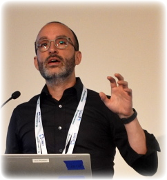
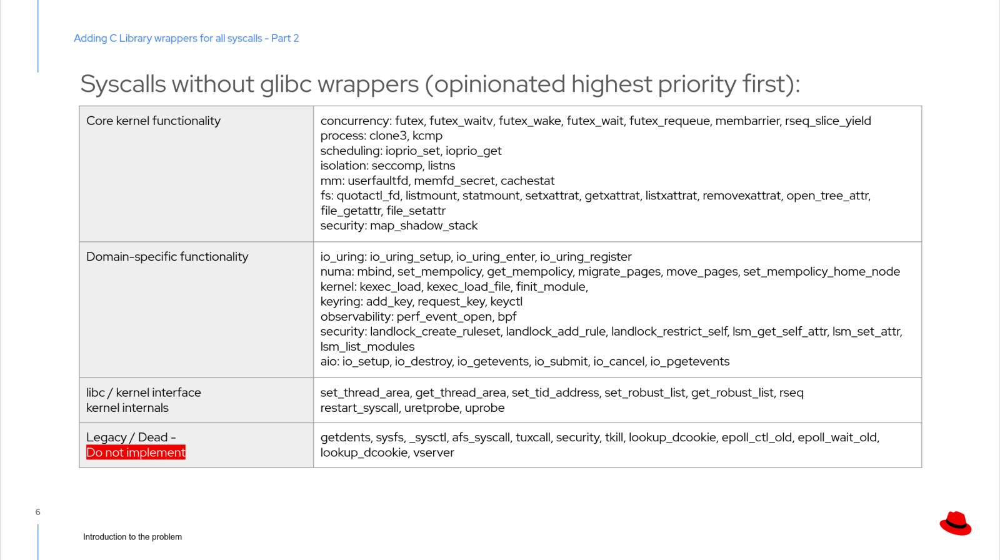
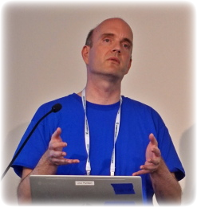

LWN.net Weekly Edition for November 5, 2026
[LWN subscriber-only content]
Welcome to the LWN.net Weekly Edition for November 5, 2026
This edition contains the following feature content:
- Containers as a recognized kernel object: Josef Bacik has proposed a container abstraction called "cells", which would turn containers into first-class kernel objects.
- LLM reviews for Debian's new queue spark debate: after feedback, maintainers can now opt-out of LLM-generated emails, but questions remain.
- System-call wrappers for glibc: making kernel functionality easier to use from the C library.
- Removing binder.c: the journey to replace the kernel's Binder driver with a Rust implementation.
- Managing the kernel CVE flood: one vendor's approach to coping with the storm of kernel CVEs.
- Plasma X11 session removal surprises some Fedora users: a mid-release update obsoleted Plasma X11 packages for Fedora Linux 44 users.
- The second part of the 7.4 merge window: the rest of the changes headed into the next kernel release.
- Portable Python scripts with dependencies: a look at the standard for declaring a Python script's dependencies, and some of the implementations.
This week's edition also includes these inner pages:
- Brief items: Brief news items from throughout the community.
- Announcements: Newsletters, conferences, security updates, patches, and more.
Please enjoy this week's edition, and, as always, thank you for supporting LWN.net.
Containers as a recognized kernel object
The foundation of the design for containers in the kernel is that there isn't one; there is no container abstraction that the kernel recognizes. Instead, the kernel provides a long list of components — namespaces, control groups, sandboxing mechanisms, and more — along with a note that says, in effect, "some assembly required". There have been attempts (repeatedly) over the years to turn containers into first-class objects with kernel support, but they have never gotten far. Now Josef Bacik is making a try with a concept that he calls "cells".
Some years ago, the lack of any sort of kernel-supported container object
was arguably the right approach; there was still a lot to be learned about
how this concept should be integrated into Linux. Some would surely argue
that it is still a good idea. But there are downsides as well, starting
with the complexity of creating a container. Beyond that, though, since
the kernel has no notion of containers, it cannot enforce a container's
properties and cannot even answer questions about which container a process
might belong to. Containers are created by walling off parts of the larger
system. Namespaces are created then entered, filesystems are unmounted or
overmounted to make them inaccessible inside the container, and so on.
This sequence means that any given process might be only partly inside a
container, a situation that, according to Bacik, "is where a depressing
number of our bugs come from
". The current approach to container
creation also makes it easy to let unwanted resources leak into the
container from the outside.
Introducing cells
Bacik's proposal is an attempt to address these problems. A container (called a "cell" in this series), when created, contains nothing at all. No processes or filesystems show up there by default. Anything that the creator wants to exist in a cell must be explicitly put there. Processes and other resources created within a cell are not allowed to to leave that cell. In theory, cells should be easier to manage and easier to keep secure than containers as they exist in Linux now.
A cell's life starts with a call to cell_create():
int cell_create(int parent, unsigned int flags);
The parent parameter is seemingly meant to designate which process will be the parent of the new cell, but in the current implementation the only allowed value is CELL_SELF, meaning that the creator is the parent. The flags argument must be zero. The return value, if all goes well, is a "cellfd" — a file descriptor referring to this cell. The cellfd is special, in that it is the handle that is used to perform all other operations on the cell. There is no way to create a duplicate cellfd that possesses the same capabilities. Creating a cell is an unprivileged operation.
If the cellfd is closed, the cell (and anything contained within it) is immediately killed. There is also a system call to kill a cell explicitly:
int cell_kill(int cellfd, unsigned int flags);
Where cellfd identifies the cell to kill, and flags must be zero.
An empty cell is secure and bug-free, but it is also rather boring. There is another system call that is used to set various properties of this cell to make it more interesting:
int cell_configure(int cellfd, unsigned int cmd, const char *key,
const void *value, int aux);
This system call applies the given configuration cmd to the cell identified by cellfd; the key string identifies which property is to be changed. The available commands are:
- CELL_SET_FLAG
- Sets the flag named by key; there are no flags defined in the current proposal, though.
- CELL_SET_STRING
- Sets the string value given by key to the given value. Two strings are supported in the initial patch set: hostname to set the host name within the cell, and net, which sets the network namespace for the cell. By default, the cell has no network access, and only AF_UNIX sockets can be created within it. Setting the net key to new creates a new network namespace that the builder will subsequently configure, while own creates a network namespace owned by the cell itself and configured internally. In the new case, there is another new system call (cell_open()) that must be used to obtain a file descriptor for the newly created namespace. The network namespace can also be explicitly set with CELL_SET_FD, described below.
- CELL_SET_BINARY
- Sets the property identified by key to the provided binary data. The only value accepted is ids, which is used to define which user IDs will be used within the cell. There are only two allowed values. Setting it to one causes processes within the cell to run with the same user ID as the creator; this mode is not allowed for the root user.
Otherwise, the ids key must be set to 65,536, which causes a block of that many IDs to be allocated from the upper part of the 32-bit user-ID space. These IDs will be unique on the running system, and the cell creator has no control over what they will be. It is not possible to create files owned by those IDs in any filesystem outside of the cell. This part of the design has drawn some comments and may change (perhaps by providing an entirely separate user-ID space for cell inmates) in the future.
- CELL_SET_FD
- Sets a value requiring a file descriptor. There are three of those implemented in this patch set. root is a filesystem namespace that contains the root filesystem within the cell, net is a network namespace to be used by the cell, and budget is a control-group directory. The budget is mandatory, and each cell must have its own control group.
- CELL_CMD_SEAL
- Once the configuration of the cell is complete, this command must be issued; it completes the initialization of the cell and prevents any further configuration changes.
Once the cell is sealed, it is set up with a filesystem tree, control-group membership, and the rest of the namespaces that control its interactions with the rest of the system. It is still otherwise empty, though, with no processes running within it. In Bacik's design, there is no way for an existing process to enter a cell; setns() cannot be used to enter its namespaces. Instead, processes must be born within the cell from the beginning, and they can never exit the cell.
Creating inmate processes
Allowing the creation of processes with life sentences inside a cell involves yet another proposal for a process-builder API; the last such attempt was covered here in August. Here, the first step is to create the process within the cell with a variant of the pidfd_open() system call. Rather than passing a process ID to pidfd_open(), the cell creator passes the cellfd and the PIDFD_EMPTY flag. The return value is a pidfd that does not, yet, refer to a running task; it is in the "embryo" state at this point.
Once the pidfd is created, it must be configured with another new system call before it can run anything useful:
int pidfd_configure(int pidfd, unsigned int cmd, const char *key,
const void *value, int aux);
The interface looks much like that of cell_configure(), and it operates in mostly the same way. The process to configure (which must be in the embryo state) is specified by pidfd; the cmd value is one of:
- PIDFD_SET_STRING
- The only supported key is exec, which names the executable file (within the cell's mount namespace) that the process will run.
- PIDFD_SET_BINARY
- Sets a key to binary data. Recognized keys are argv to set the processes argument vector, envp to set its environment variables, and cred, which sets the process's user and group IDs within the cell's user namespace.
- PIDFD_SET_FD
- Sets a file descriptor in the embryo process; the key is the file-descriptor number (as a string), and the aux parameter is an open file descriptor in the caller's file table. The only open file descriptors the process will have are those set up with PIDFD_SET_FD, so there should be no problems with file descriptors accidentally leaking into the cell.
- PIDFD_CMD_START
- This command sets the process running once all of the necessary parameters have been configured. After that, it is no longer an embryo, and pidfd_configure() can no longer be used with it.
The first process to be started within the cell becomes the init process for the cell; if it dies, the cell dies with it. It is possible to inject other processes into a running cell using this API, so the owner can, for example, start a shell within the cell if need be. But that must be done by creating a new process; existing processes are forbidden from crossing that boundary.
Other details
A lot of other restrictions at the cell boundary exist as well. Every process within the cell runs with the "no new privileges" flag set, so it cannot gain new capabilities. It is not possible to send open file descriptors across the boundary (in either direction) using Unix-domain sockets. Cells cannot share a control group with any other processes. And so on; the purpose is to make the containment of cells as tight and controlled as it can be.
There are a lot of details to this proposal that have not been covered
here; it also contains a long list of open issues and shortcomings. As
Bacik noted, the purpose is not to provide a complete implementation;
instead, it "exists so that there is code to argue about
". Readers
wanting to know more should read through his entire proposal. The code
exists in a
GitHub branch; it contains a
design document that covers much of what was discussed here and more as well.
So far, there has been little discussion of this proposal, perhaps because it was only posted to the linux-fsdevel mailing list. Nonetheless, it has evolved somewhat since the first version was posted in mid-October. This is not a small proposal, and it is trying to make changes that have proved controversial in the past, so it is not hard to imagine that discussion will eventually happen. At the far end of it, though, the kernel might just have the container abstraction that its community has resisted for so long.
LLM reviews for Debian's new queue spark debate
The Debian project has wrestled with the topic of LLM usage for years, which culminated in a general-resolution vote this August. The project voted in favor of the fifth, out of eight, option: "Responsible Use of Generative AI". With the door open to LLM use, the DFSG, Licensing & New Packages Team (usually shortened to "DFSG team"), which is relatively new, has started to employ LLMs in sending out reviews of packages entering Debian's new queue. The practice has raised a number of objections and questions about where lines should be drawn in the use of LLM-generated output.
New queue dashboard
The new queue name may be a bit misleading to those outside of the Debian project. "New", in this case, refers not only to brand-new packages that have never before been distributed by Debian, but also to various updates of existing packages.
The DFSG team's Reinhard Tartler announced
the new queue
dashboard in February, calling it "a fundamental shift in how we
prioritize and process packages
". He said that this would be the first time
that everyone could have a high-level view of what is happening in the new
queue; packages entering the queue would be prioritized by "a set of signals
designed to improve overall project health
" including the time they had been
in the queue, how popular the package is judged by its popcon score, and whether a package update
unblocks other issues. For example, a package in the new queue might address
bugs or security problems in other packages.
According to the dashboard FAQ, packages in
the queue are sorted by a priority score; those with a higher score are placed
at the top of the queue. That is not a guarantee that packages will be reviewed
in order, though. DFSG team members can pick any package to
review, they are not bound to choose from the top of the list. DFSG team
member Andrew McMillan talked about priorities for
reviews in his report on the DFSG team at DebConf26. "The ones that come to
the top of my list tend to be languages that I'm more familiar with, like
Go. And the ones that go to the bottom of my list tend to be languages that I'm
less familiar with, like Python.
"
The repository for the new-queue tooling is hosted on Salsa, the Debian project's GitLab-based collaborative development server. The LLM-review agent seems to have been added (commit) on September 29, by McMillan, with additional work to enable LLM reviews following that.
Uploaders receive an email generated by the LLM that states the review was
performed by an LLM and is not a review by a member of the DFSG team, with a
disclaimer that its review may be incorrect or incomplete. According to
McMillan's commit message, if the LLM review claims that there is a blocker or
important licensing issue in an upload then it is held from the queue for 24
hours. That seems to be in conflict with the FAQ, though, which states that
uploads appear on the dashboard within "a little more than an hour
". A
feature to allow uploaders to answer or reject the LLM review was added
on October 19. If the uploader comments, the hold is ended. If there is no
comment, then the upload is docked 50 points under the DFSG queue scoring
system. According to another
commit a response adds 25 points. Note that the scoring system is somewhat
opaque, there is no list I could find that spelled out the scoring
explicitly. At the moment, the package at the top of the dashboard (bucklespring)
has been in the queue for three days, and it has 424 points. At the bottom of
the board is a package with only 23 points (openbor)
that has been in the queue for seven hours.
Endorsing LLMs?
The first project-wide communication about the addition of LLM reviews in new queue processing came not from the DFSG team, but from Debian developer Johannes Schauer Marin Rodrigues on October 26. He declared that he would no longer be uploading packages to the new queue after learning that submissions to the queue are processed by an LLM. It seemed to him that adopting LLM usage in this way, by a team and process that is core to contributing to Debian, it was effectively a project endorsement of LLMs.
The "responsible use" option the project chose states that Debian "neither
endorses nor prohibits the use of generative AI tools
". Instead, it says that
it relies on the judgment and responsibility of its individual contributors, but
cautions that contributors should "exercise appropriate care when designing
and implementing workflows that incorporate generative AI tools
". It also
says that actions utilizing LLMs that have "broad impact
" should be taken
only after "prior discussion and consensus through the appropriate project
channels before proceeding
".
Schauer complained that the DFSG team had not announced this addition to its process, and asked where the team had conducted any discussion or gotten consensus:
I *am* grateful for the (mostly thankless) work done by the DFSG team but I [would] rather wait a year before my package makes it through NEW (yes, that happened) than have my strong opposition to LLMs be ignored and all my uploads being automatically screened without my consent. I think seeking prior discussion for this is especially warranted because (I hope) we learned in the GR discussion on debian-vote that there are developers with strong opinions in either direction. Why not talk about it first?
He thought that packagers should have to opt-in to LLM reviews, and said he
would not upload anything to the new queue without a way to opt out of
them. Mathias Gibbens also
noticed the change, and seconded Rodrigues's concerns. It was fine with him
if individuals on the DFSG team used LLMs in reviewing packages, but he wanted a
"succinct and to the point
" review. He pointed to some of the reviews
shown in the DSFG team's dashboard and noted that one
report chosen at random weighed in at 734 words, and another
one was 1,535 words. He had not tried to read through them, but he wanted to
emphasize "the many orders of magnitude change in review size that's being
generated
".
Gibbens noted that the process now appears to be weighted against people
who ignored the LLM reviews, and in favor of those who replied to the LLM
review. He was concerned that the DFSG team's new practices meant that everyone
uploading to the new queue is now forced to interact with LLM-generated
content. "As best as I know, this is the first such significant change to any
Debian-wide process since the passing of the GR.
"
Terms & conditions?
Martin Steigerwald wanted to know more about the services and technology behind the LLM-generated output. He was concerned about the terms and conditions of the service, whether LLMs would be trained on data from the automatic review process, and wondered which models were being used.
The service being used by the DFSG team for the LLM reviews is the Debian Inference Portal, which was announced by Lucas Nussbaum in September. That service provides Debian contributors self-service access to an API that various coding agents, editors, and other tools can use to query the hosted LLMs. Currently the service is being provided by ScaleWay, a European cloud provider, which is donating a set number of credits each month to the Debian project.
Many of the questions Steigerwald had were answered by the documentation
for the portal. It explains which
models are available, and that the company has a policy
of zero data retention. "Prompt content is not stored, and is explicitly
not used for training, retraining, or improving the base models. Data is not
accessible to the LLM creators or to third parties.
" Some metadata, such as
token counts and HTTP status codes, is retained up to six months for performance
monitoring, according to the documentation.
Discussion
As one might expect, there was a fair bit of discussion about the use of LLM
reviews and whether it was in the spirit of the general resolution. Matthias
Geiger said
that it was a "blatant waste of maintainer time
". He said that
"dumping a generated generic review text on maintainers feels highly
disrespectful
". The reason he contributed to, and loved, Debian was due to
its community. He did not want "the equivalent to an automatic answering
machine
" involved in reviewing his packages.
Richard Laager, however, defended
the LLM's output. He said that the lengthy review was due to "a whole bunch
of specific examples of copyright mismatches
", and he found the report to be
"reasonable, helpful, and actionable
". Ted Ts'o pointed out that
"[unreliable] and non-deterministic
" humans are capable of giving
bad reviews too. He thought that the automated reports could save time by
allowing maintainers to resolve problems before a human had to review the
package. "If it's pointing out things that humans later have validated to be
true, wouldn't you rather have first access if it allows your NEW package to get
accepted faster?
" But people could ignore the reports if they wanted, he
said. It troubled
Ben Finney that Ts'o was comparing humans and machines in the
conversation:
Humans are our peers. As such, we must acknowledge they are fallible like ourselves, and accord them much generosity and work with them, expecting they have needs and wants and a desire to improve and help us in return.
LLMs, on the other hand, did not deserve the same consideration. "We are
right to complain that it is used to impose on our work and our attention.
"
Finney said that it was not good enough to suggest that the reports could be
ignored. "If the messages are imposed unilaterally on us by the agency of
someone else, that is obnoxious and we are right to demand that it
cease.
"
Nussbaum reasoned
that the DFSG team was using the LLM reviews anyway, and that it made sense to
provide the report to maintainers "so they can react without waiting for a
human review, similarly to how maintainers react to CI results
". He did not
see the point in "hiding those reports
". It was fine if some maintainers
wanted to wait for a human to confirm the results, "by why penalize those who
welcome early feedback?
" Bill Allombert argued that
developers would feel that packages would be rejected unless they comply with
the LLM's suggestions.
Marvin Renich said there seemed
to be two disparate points of view: that of people receiving LLM feedback, and
the DFSG team. He thought that the DFSG team "intended to use the output from
the LLM as one input in their review process
", whether a submitter used it
or not. From that point of view, "it is unnecessary for a submitter to feel
that they have any control over whether or not an LLM is used when they
upload
". But they do, he said, have a right not to see the LLM output:
What the DFSG team did not seem to take into account, however, was the substantial controversial nature of the most recent GR. I feel they should have known that there would be people who would truly _not_ want to see the direct output from the LLM, at least not without human review first.
Opt-out please
Chris Hofstaedtler wondered if the DFSG
team was just not interacting with the debian-devel mailing list, "i.e., the
one place we expect contributors to read
". That was on October 27,
early on in the discussion. To date, none of the DFSG team have responded to the
discussion on debian-devel, nor has Debian Project Leader Sruthi Chandran, who renewed
the delegation for the DFSG team, on October 25, for another year. They
have, however, taken some feedback via issues filed against the new-queue
repository on Salsa.
Antonio Terceiro opened an
issue asking that developers be allowed to opt-out of LLM
reviews on October 26. He said he did not want to have an argument about
the merits of LLMs, but the reality was that some project members were
uncomfortable or even offended by LLMs and should have the ability to
opt-out. Colin Watson said
that opt-in would be better: "But opt-out would be better than nothing.
"
There was no direct response from the DFSG team, but Nilesh Patra pointed
out that the request had been addressed by a commit
from McMillan that allows uploaders to opt-out of review. Terceiro posted
a screenshot of the opt-out button on the dashboard and said, "I guess that's the best we
can get for now
".
Discussion on the topic continues, though it has slowed down significantly. The opt-out option may not satisfy all Debian uploaders who dislike the use of LLMs, but it seems to have mollified many of the people who complained about unwanted LLM reviews for now.
System-call wrappers for glibc
In a followup to his session at the 2025 Linux Plumbers Conference (LPC), Carlos O'Donell returned to the topic of system-call wrappers for the GNU C library (glibc) at this year's event. This time around, he was joined by Florian Weimer, who is another glibc maintainer. The idea was to give an update on what has happened over the last year with regard to Linux system calls that lack a glibc wrapper, thus are only accessible via syscall(). In addition, they wanted to hear from attendees about their needs in this area.
Background
O'Donell began by describing "the problem we're trying to solve
",
which is to make kernel functionality that is exposed by system calls easy
to use from the C library. If a system call is available, the feature has
already been added to the kernel and there is an entry in a header file to
access it. There are lots of reasons developers want access to new
system calls, for testing, examples, sorting out ABI issues, and so on, he
said.
Currently, there are libraries "that encapsulate entire sets of
syscalls
", such as liburing and liburcu (which were listed in the slides,
but not explicitly mentioned at the time); the developers of those
libraries "have done a very good job of exposing that
functionality
", but often not directly as system calls. The
specialized-library
developers may choose to offer a different interface that may be easier for
programmers to use.

What O'Donell wanted to talk about was all of the other system calls that
are lacking any glibc interface (other than syscall()). There is a
bunch of complexity in creating system-call wrappers, "because
of ABI issues, procedure-call standards, the way in which parameters are
passed to the kernel, the special kernel parameter-calling interfaces that
you have
", and so on. Due to that, it is difficult to write portable
versions of system-call wrappers, which means they end up as "weird,
per-architecture-specific things
". Creating those wrappers should not
require understanding all of that, he said.
So, at last year's session, he offered to "review, coach, [and] mentor
syscall wrappers through the process
". When kernel developers
add a system call, there are multiple communities they need to work with in
order to actually
provide the feature to users, such as musl
libc, LLVM-libc, and others. His
offer was to try to make that process easier for getting system-call
wrappers into glibc.
"Ta-da
", he said, with a slide showing an RFC
patch set from André Almeida to add a wrapper for futex_waitv(). O'Donell thanked
Almeida, who was present, for
taking him up on his offer, noting that the two of them have been working
on a patch set with Adhemerval Zanella. The futex
interface is complicated, O'Donell said; it is a "multiplexed
interface with really gnarly, fiddly pieces
", but the wrappers are a work
in progress. "I think this is the start of a beautiful series of
patches, of collaborating with us to make sure that we get the wrappers in place.
"
Missing
Next, he turned to the specific system calls without wrappers. He looked
at the x86-64 architecture, which has 386 system calls in the Linux kernel
tree. Of those, glibc is exporting 292 "same-named globals
", which
means that there is a C function in glbc with the same name as the system
call. That call "basically does that functionality; I'm not saying that
it's exact or identical
". For example, some wrappers need to map
kernel types into the equivalent user-space-ABI types.
There is a mixture of mechanically created assembly language wrappers and
manually created C wrappers, which is less than ideal, perhaps, but is
where things stand, he said. Since 2014, the glibc developers have been
looking at ways of mechanically generating wrappers, "but the
mechanical-conversion process is so fiddly
" because there are so many
different details that need to be taken into account. So that project has
never been completed.
Beyond the 292, there are 16 glibc calls that have different names than the
system calls because the behavior is different. That leaves 77 system
calls with no wrapper. Toolchains track organizer Nick Desaulniers asked
if there were any of those 77 that are "dead and should be slated for
removal
". O'Donell enthusiastically agreed that there were: "absolutely
"; he noted
that Desaulniers had anticipated his next slide (seen below), which contained the answer. The slide had an opinionated list of the priorities
for adding wrappers that was compiled by O'Donell, Weimer, and Zanella.

O'Donell said that he didn't expect attendees to really read the slide, but
to just get a general idea of the different buckets that had been used to
classify the system calls. The first bucket was "core-kernel
functionality", which Weimer and O'Donell went back and forth over, moving
calls from there to the "domain-specific functionality" bucket and back
again. "For the 'domain-specific functionality', I don't think we want
wrappers for them
", O'Donell said. At the top of that list is calls
for io_uring,
which are not a priority for wrappers because developers will simply use liburing. If that turns out
not to be true, thus kernel and user-space developers are asking for
wrappers, the glibc developers may add them at some point, but there are
higher priority targets.
Another lower priority area is system calls that implement interfaces
needed by C-library implementations. Those can be called directly from the
C-library code and are not functionality that many application developers
will need, he said. Then there are "the things that are dead
"
listed at the bottom of the slide "that we'd never implement
".
Concurrency
Going back to the top-priority system calls, he noted that there are a
number of concurrency primitives, such as futex_waitv(), that the
kernel exposes which need wrappers. That is what is behind Almeida's
efforts and those wrappers are needed elsewhere, such as in libstdc++, O'Donell
said. Since they were not available, "we hack it up and libstdc++ calls
futex() directly
", which should not have happened.
Beyond the concurrency primitives, there are various calls for scheduling, isolation, memory management, filesystems, and so on. At the bottom of core-kernel functionality section is map_shadow_stack(), which may not quite have the same priority, O'Donell said. But once futex_waitv() gets in, it makes sense to start working on more of the concurrency calls as part of the core-kernel functionality category.
O'Donell noted that Weimer wants to add wrappers for membarrier() and rseq_slice_yield(), but asked about
get_robust_list()
and set_robust_list() (which came up in Almeida's session at LPC 2025). Weimer said
that those calls should not have glibc wrappers; "that needs to be
more efficient, because you can't do a syscall when you need it
".
O'Donell asked Almeida if he would sort the list of concurrency primitives
differently, but Almeida said that it looked good to him. He wants
to get futex_waitv() wrapped because it is used for emulation, but
"eventually I would like to have some sort of pthread_wait_on_multiple()
as well and I think this is the first step
". That would be like the
Windows WaitForMultipleObjects()
function, O'Donell suggested, which is a powerful primitive that is lacking
in Linux. Almeida agreed and said that the hard part has already been done
in the kernel; O'Donell and he agreed that a collaboration between glibc
and kernel developers to determine how that interface would work is a
good next step.
There are legacy system calls that the kernel has to support forever, Steven Rostedt said, in order to keep running code that was written in the 1990s. But that does not mean that they need to be available for code bases that are newer and do not require those calls, which may have a security benefit since the legacy calls are less scrutinized. So he suggested that a list of these system calls be collected and then a kernel-configuration option could be added to remove them from some kernel builds.
O'Donell said that the glibc maintainers have discussed ways to harden the
library, including removing system calls from it. "If you never call
exec(), why are you allowing exec() to exist as a
callable global symbol?
" Weimer noted that some people have started
removing the 32-bit time system calls from glibc, in favor of the 64-bit
calls, but that is problematic for the glibc developers because the 32-bit
versions are used internally. Glibc still needs to run on kernels that only have
32-bit time values. "If you disable the support for reasons, then stuff
breaks because we are actually using them for compatibility with older kernels.
"
Conflicting symbols
Earlier, Almeida had asked about symbol conflicts, which O'Donell
acknowledged as a difficult problem. He does not think there is a silver
bullet for handling symbol conflicts between different libraries and header
files; it is "possibly an ecosystem problem where we have to work [it]
out with individual projects
". He likened it to the effort he and
Weimer were involved in to move all of the
Fedora packages to C99, which was a "cross-cutting ecosystem
project
" that required lots of volunteers fixing each problem as it
arose.

Weimer said that the conflicts most often occur when someone wants to use
"the official libc functionality
" so they include the appropriate
glibc header file but also need something from kernel header files in the
same compilation unit. That may cause conflicts. Fixing those problems
requires more coordination between the glibc and kernel projects.
Weimer said that his highest priority is to complete the wrappers for existing
functionality, restartable sequences in
particular. Another high priority is on "system calls that have a
strong C library dependency
" because there is a global object that
needs to be accessed in a coordinated way. His example was for system
calls that affect the thread control
block (TCB), which should not be manipulated from two separate
user-space libraries. Right now, the C library uses the TCB for locking,
while web browsers use the clone()
system call wrapper from glibc, but "then do a longjmp()
out of that and then patch the TCB so that the rest of the C library works
and that is horrible for backwards compatibility
". The browsers need
to know the structure offsets in the TCB in order to do that; his hope is
that working on system calls with a TCB dependency will allow moving the
browsers to "a model that's supportable longer term
".
Another area he would like to see dealt with is system calls that have non-portable signatures; futex() is a good example because there is also the incompatible futex_time64(). On some architectures you have to use futex() and others futex_time64() but having an #ifdef on every call site is not really going to happen. Arnd Bergmann said that the older, 32-bit-only calls will be going away anyway, because the kernel cannot support 32-bit times. Weimer seemed to be hoping that futex() was not slated for removal from the kernel, but Bergmann was adamant that it was. Weimer suggested making timestamps unsigned, which would extend the life of 32-bit times (at the expense of being able to represent times before 1970), but there was no response to that.
Enumeration
H. Peter Anvin said that the kernel needed to provide a mechanism for
enumerating system calls, which would allow using the GNU indirect
function (IFUNC) feature. Right now, a program does not know that a
system call is not implemented until it gets an ENOSYS error, and
"the opportunity to use IFUNC has already long since passed
".
Weimer did not think that would help much because seccomp()
filters can also return ENOSYS; it would be nice if the kernel provided a complete
view of what is permitted that included seccomp() restrictions.
It might make sense to have the kernel provide its own library for the
simple and straightforward system calls, Anvin said. That would decouple
the release schedules for distributions; some conservative distributions
want to update glibc less frequently than the kernel, he said. O'Donell
suggested looking at the BSD design, where the kernel provides a
system-call dynamic
shared object (DSO), which is used as a filter for the C library DSO. If a
call is not present in the kernel DSO, the one from the C library is used.
If the kernel starts implementing new system calls, "they just pop into
existence
". He thought it might be worth reviewing that mechanism to
see if Linux could benefit from that approach.
Kees Cook returned to the seccomp() filters and wondered what kind
of information was needed. That code maintains an internal bitmap of
system calls with three states indicating whether seccomp() will
always allow it, always reject it, or "I have no idea, there's a filter
attached to it
". That information could be exposed to the C library
somehow, he said. Weimer thought that might be useful, but "that is
more like the finishing touches, we have much more work to do before we get
there
", he said to laughter.
For example, Weimer said that map_shadow_stack() suffered from seccomp() filter problems too. Glibc can use prctl() to enable shadow stacks, which succeeds. Later it may try to create a new shadow stack, but map_shadow_stack() fails due to a seccomp() filter. He would like to make that work.
Another problematic system call is membarrier(), he said. He had
a patch set to add it to glibc, but while that was in progress, the kernel
developers added a new parameter to the system call. "That is a bit of a
turn off for writing a wrapper when you don't know what the signature
is.
" Fixing the signature in stone while arguments are still being
added is problematic on the glibc side.
Once his high-priority items are addressed, Weimer said, he wants to
"basically get out of the wrapping business
" by improving the
generic system-call wrappers. There would be three variants, the existing
_syscall(), one for system calls that return twice like vfork()
(named _syscallr()), and one that allows canceling system calls
(_sycallc()). The return-twice variant needs an attribute so that
GCC and Clang do not apply invalid optimizations. Cancellable system calls
are not possible with the existing wrapper, but the new wrapper would
arrange that the system call can be interrupted in a safe way, that the
cancellation handlers are run, and that the thread exits. In addition,
the new wrappers would switch away from using long for register
types, which is not the right type for some architectures.
The wrappers would allow easier testing for new system calls, though they
would not provide the type safety that the eventual full system-call
wrappers will provide. O'Donell said that it will allow developers to
immediately start using new system calls. Anvin was concerned that new testing
features "have a nasty nasty tendency to end up in production
".
Weimer said that it is "not worse than ioctl()
",
which was met with laughter. He is concerned that putting more friction
into the paths of developers, in the form of requiring automatically generated system
calls in the virtual DSO
(vDSO) or similar, will just cause them to turn to ioctl()-style interfaces.
Anvin thought that if the system-call wrapper was generated out of the
kernel build, it would alleviate much of the problem. O'Donell agreed,
but thought that was a longer-term solution; until then, the new wrappers
would effectively be "a honeypot to catch people wanting to write
syscall pieces
". That can lead to a conversation about getting a
proper wrapper added to glibc. In parallel, the discussion about other ways
to improve the situation should be pursued, he thought.
O'Donell and Weimer were out of time at that point, so they wrapped up quickly with a question for attendees to consider: what other system calls could be added to glibc to make their lives easier? They suggested using the kernel-features repository that is part of the UAPI group at GitHub as a place to gather ideas.
A YouTube video of the session is available as well.
[Thanks to the Linux Foundation, LWN's travel sponsor, for assistance in attending LPC in Prague.]
Removing binder.c
The final talk at Kangrejos 2026 was about the removal of the C implementation of Android's Binder driver, the primary interprocess communication mechanism used on Android devices. Carlos Llamas announced that he had deleted the C code to general applause, and then shared some insights about what went into replacing the C implementation. Alice Ryhl, who has worked on the Rust implementation for some years, added her own thoughts about what the most difficult and interesting parts of the transition were.
Binder was added to the kernel in 2008, Llamas said, as an interprocess communication mechanism for Android devices. Its design originated in BeOS, but it has grown significantly since then. It provides a rich set of operations for allowing processes to communicate with the minimum amount of overhead. It also, therefore, presents a large attack surface for Android. Many complicated chained attacks against Android have involved Binder at one step or another, Llamas explained. Google's internal "red team" (the team dedicated to proactive security research) deemed Binder to be the most vulnerability-dense component in the entire operating system, with more CVEs per line than anywhere else.
That made it an obvious candidate for porting to Rust, Llamas said. Binder was the first user of Rust in the kernel, he added, although Ryhl did not publicly post the first version of what became the Rust implementation until 2023, well after the Rust experiment started in 2021. All told, the effort took more than five years. Binder is used for every single screen touch, permission check, and cross-application message on Android, which runs on more than three billion devices. In total, it works out to hundreds of billions of Binder transactions per second, globally, he added. That scale meant that even the smallest discrepancy between the interface provided by the C version and the one provided by the Rust version would cause problems and regressions for some use case.
One particularly tricky aspect has been performance, Ryhl said. Throughput doesn't matter that much; what matters is the tail latencies. Most screen frames on Android have a Binder transaction in the critical path of the frame, she explained. So, a difference of two microseconds on average is not a real problem, but if Binder is ever twenty milliseconds slower, even once in a while, people will notice and care.
The actual algorithms that the C and Rust implementations use are identical, she continued, so there are no large differences in throughput. But, because Rust handles locking differently, there were problems with the tail latency from lock contention that she had to debug. For example, one user-reported traceback showed Binder attempting to take a mutex that was held by another process. That process was preempted, and did not resume executing for twenty milliseconds, well past the sixteen millisecond budget to render a single frame.
It was a classic case of priority inversion. To solve the problem in Binder, Ryhl moved
as many operations out from under the lock as possible, and was able
to replace it with a spinlock, which made the problem go away. The equivalent
lock in the C implementation was already a spinlock: "I deviated from C
Binder, and pow. It has eighteen years of accumulated quirks.
"
Eventually, however, the Rust implementation was good enough for most use cases. And the C implementation was still producing new vulnerabilities every time someone tried to introduce a new feature. Eventually, Llamas and Ryhl decided to only add new features to the Rust implementation, in order to motivate people to switch and to avoid headaches from the C implementation. That policy has resulted in the Rust version becoming faster than the C version, because Ryhl was able to introduce an algorithmic improvement that reduced the number of needed system calls, a change that had been considered too complex for the C implementation. Now that the C implementation has been deleted, there are more of those coming, she promised.
Another area that proved difficult was dealing with tracepoints. Users aren't supposed to rely on the presence or behavior of most kernel-internal tracepoints, but they do. This meant that Ryhl had to copy the existing tracepoints in Binder as a de facto part of the driver's API. That even extended into some of the data structures involved in the driver. In one case, she said, there was a reference-counted structure that had a slightly different reference count in the Rust implementation, because the Rust code was holding an additional pointer to the structure. That turned out to be a problem for one particular piece of client code, since it relied on checking the reference count via a tracepoint in order to determine when the C implementation had reached a particular state.
There was also a lot of toolchain support needed, Ryhl continued. The Rust implementation had to work with kernel address-space layout randomization (KASLR), control-flow integrity (CFI), and profile-guided optimization. Production Android kernels are built with all of those enabled, and since they impact code generation, the Rust code needed to account for them.
Llamas then went into more detail about the deployment plan that will be used to convert users to the Rust implementation. A major problem with just rolling the Rust implementation out is the existence of vendor hooks: custom tracepoints used to inject vendor-specific behavior into the kernel. The Rust implementation of Binder was not able to reproduce those in every case, and therefore many vendors are stuck on the C implementation until they update their code. That's going to be a slow process.
Old stable versions of the kernel will continue to have the C Binder, and receive security fixes, which gives the various Android vendors a little bit of leeway until they're forced to update. After the conference, the patch removing the C implementation was merged as part of the 7.4 merge window, so that is the version past which the Rust implementation is required. 7.3 is the designated long-term-support release for 2026.
One person asked whether this would pose a problem for people compiling
the kernel with GCC. Miguel Ojeda responded that many distributions are using a
workaround for the current lack of Rust support in GCC: they are building
the C side of the kernel with GCC, and the Rust side with LLVM. He said that he
had advised against compiling the kernel in that way, because it is "a
complete hack
", though people who use it are unlikely to complain about
being forced onto Clang. Greg Kroah-Hartman added that it will take months or
years to learn about anyone who has problems with the Rust version of the
driver, given how slowly Android vendors update their kernels. Furthermore, the
removal is a single patch that can be cleanly reverted, if someone needs
to continue using the C version.
Llamas thought that it was worth considering what the removal process should
look like for other code that gets ported to Rust. He asked what people thought
should happen to the C version of converted drivers on long-term-support
branches. Ojeda said that the process would be exactly the same as the existing
policy for replaced C code. The only difference
between Rust and C in long-term-support releases is that the Rust maintainers
backport fixes for soundness problems, he said.
Kroah-Hartman told Llamas not to worry about code that has been replaced:
"Just delete it. I take patches for subsystems that have been deleted. It's
fine.
"
With that declaration, the session, the conference, and the presence of the C Binder driver in the kernel were all over. Binder is the first nontrivial component in the kernel to be ported to Rust, and its journey has revealed several pitfalls that don't apply to new drivers written in Rust from scratch. Still, the most difficult problems were not Rust-specific; they were the compatibility problems that any rewrite would face. Whether any other kernel components will find the hassle of a rewrite worth it, and how long they will take to accomplish it, remains to be seen.
[ Thanks to the Linux Foundation, LWN's travel sponsor, for supporting my travel to Kangrejos. ]
Managing the kernel CVE flood
We recently looked at how the kernel community is dealing with the firehose of vulnerability reports, but said little about how users of the kernel are responding. At the 2026 Linux Plumbers Conference, Amazon employees Dylan Johnson and Justinien Bouron discussed the problem from the point of view of engineers trying to keep AWS running and secure in the face of a storm of CVE disclosures. The kernel community's longstanding advice is to run current kernels, and that turns out to work — sort of.Bouron started by reminding the audience that the kernel community became its own CVE numbering authority (CNA) in 2024. The immediate result was the issuance of thousands of CVE numbers every year, forcing companies to rethink how they handle kernel vulnerabilities. The engineers running the AWS cloud were not immune to this change.
Triage
Linux, he said, runs everything from crock pots to nuclear power plants; each type of deployment has its own threat model and fault tolerances. The impact of any given CVE can vary considerably from one situation to the next. It is thus necessary to triage CVEs as they arrive, assessing the impact of each on a specific environment; nobody else can do that work for you.
After triage, the next task is to determine how to mitigate the threat, if any. One possible response is to do nothing, which may be fine when dealing with, for example, a CVE affecting an unused driver. The recommended approach, usually, is to wait for a new long-term-support (LTS) kernel, but that can leave systems vulnerable until that kernel has arrived, been tested, and deployed. Cherry-picking fixes can be faster, but has its own risks. In other cases, the best response may be to work around the issue in some way, perhaps by disabling the vulnerable code. The proper response has to be figured out for each incoming CVE.
Triaging of CVEs can help by speeding up the mitigation response, he said. Internal update schedules do not always align well with kernel-release schedules, or a new LTS update may arrive while the work to deploy the previous one is still underway. If that new update contains a fix for a severe vulnerability, it might make sense to cherry-pick that fix rather than going through the whole testing process.
Other times, there may be important vulnerabilities that are not fixed in the specific LTS kernel series that one is running. Fixes land in the mainline kernel first, and are subsequently backported to the stable releases. Backporting is relatively easy when the target is a recent kernel, but it becomes harder with older kernels. So the older LTS kernels will not receive all of the fixes that are applied to the mainline; the number of missing fixes grows over time. The 5.10.267 stable kernel, he said, has over 1,700 open CVEs, of which 1,200 are at least 90 days old. Most of those will probably never be fixed. Sites running 5.10 kernels thus have the unpleasant choice of remaining vulnerable or backporting the missing fixes themselves.
Backporting all 1,700 of those fixes is not possible, though; that is where the triage process comes in by helping to determine which patches merit that sort of effort. Before 2024, there were roughly two kernel CVEs issued every week, so a manual triage process was workable. After 2024, though, the rate went up to 16 — per day. And that was before the LLM-driven tsunami hit; now there can be hundreds of new CVEs showing up in a single day. At that rate, manual review simply is not possible.
So the triage process must be at least partially automated. The first step in that direction is "autopruning" — filtering out the CVEs that are not applicable to a specific kernel configuration. The CVE records issued by the kernel CNA include detailed JSON reports indicating which kernel versions and which files are affected. Filtering on those parameters allows about 70% of the CVEs to be discarded. This figure could probably be improved further by trimming down the AWS kernel configuration, which probably still enables a lot of unneeded features and subsystems. This trimming can be effective, but it is a difficult problem, requiring a detailed knowledge of the deployment environment. If one does not know about every use of the systems involved, it is hard to know what can be removed. There are over 32,000 configuration options for the kernel; playing with them is an easy way to create bugs or performance regressions that only show up months later. For environments running at a massive scale, the problem is almost impossible.
As the CVE rate increased, even the pruned stream involved far too much manual review. The solution chosen was, perhaps inevitably, to involve an LLM. This system is fed the pruned CVE stream, along with the active kernel configurations and threat-model documentation; it then generates a score for each CVE. The output is a table with a description of each CVE and a decision on whether (and how badly) it impacts AWS; it is meant to be a resource that humans can then quickly review. That review, he said, is now the only manual step in the whole process; it is the final bottleneck, and is hard to optimize further, but there is no desire to drop it and rely entirely on the automated system.
Is this system good enough to allow AWS to stick with older LTS kernels? No, he said, there are simply too many unpatched CVEs in those kernels, forcing sites to either accept vulnerabilities or backport fixes themselves. If the backport path is taken, the result is a kernel that nobody else has tested, meaning that even more in-house testing is needed before deployment. It is also necessary to be sure that the patched system is truly no longer vulnerable to the problem. Whoever does this work will have to contend with a lot of difficult conflicts that probably need subsystem expertise to resolve. For extra fun, the CVE reports may not list all of the patches needed to resolve an issue.
The end result, he said, is that this path is not sustainable; the model of following an older LTS kernel until it reaches end of life is obsolete. The only way to keep up with the stream of fixes is to upgrade to newer kernels.
Keeping up with stable
Johnson took over to talk about how those upgrades go. In late 2024, AWS was still running kernels from the 5.10 series and had to decide whether to upgrade. The lifetime of most stable kernels is two to three months he said, but it took AWS a full year to transition to a new kernel. Upgrading to a random stable kernel would result in deploying a kernel that had gone out of support long before, so the only viable approach is to stick with the LTS kernels.
Which LTS should be chosen when upgrade time comes? The newer LTS kernels are fixed more quickly and have less outstanding CVE debt — the number of unfixed CVEs grows more slowly with those kernels. The median time for a patch to land in 6.18, he said, is 18 days, while for 5.10 it is 32 days. Since maintaining LTS kernels is not easy, the newer ones tend to be prioritized; the backports to those kernels are easier. In other words, the newer LTS kernels are safer. Since they have fewer unfixed CVEs, newer kernels are much less likely to force the in-house backporting of fixes.
So upgrading to the latest LTS kernel is the best option. But it is still not easy. In 2021, the upgrade from 4.19 to 5.10 took about 24 months, much of which was spent forward-porting out-of-tree patches. For the upgrade to 6.12, that had been reduced to 12 months, and the upgrade to 6.18 only took six months. This upgrade time has been reduced through a combination of better tests and a more experienced team. An effort to reduce user-space dependencies has resulted in fewer regressions, which eases upgrades as well.
Every issue that came up in the upgrade to 6.12 was tracked; 45% of them
turned out to be in the kernel itself, mostly in "a few hundred
"
out-of-tree patches. User-space problems accounted for 43% of the
problems, configuration problems were 7%, and firmware-related
problems were the remaining 5%. That last category is partly driven
by improved error reporting for hardware problems, resulting in a higher
error-detection rate. Of the kernel-space fixes, he said, 15% were submitted
upstream (he did not say how many were accepted); the hope is for that
number to increase over time.
Johnson provided a few examples of the types of problems that were encountered in upgrades:
- The change within the memory-management subsystem from the virtual memory area red-black tree to maple trees made mmap() and munmap() operations slower. This problem was addressed by changing user space to perform fewer of those operations.
- Switching from the completely fair scheduler to the EEVDF scheduler changed the timing of fork() operations. The completely fair scheduler prioritized the parent after a fork, and user space depended on the parent running first. Again, the solution was to fix user space.
- The default value of max_sectors_kb was increased, leading to firmware timeouts. There is a great deal of hardware diversity in the AWS fleet, and some of that hardware did not react well to the larger size. Some tuning addressed this problem.
In conclusion, he said, Hyrum's Law applies here as everywhere else; every visible change will break something for somebody.
Eventually it would be good to get to a point where AWS is always running
the latest stable kernel. With a six-month transition time, though, that
is not yet possible. There is a need for better tooling and faster
qualification of kernels. Even then, though, many problems turn up during
the "soak time
" while a new kernel is being tested; going faster
risks missing those problems until after deployment. One way of improving
the situation is continuously running the current stable releases in a
testing environment, then switching to the next LTS kernel once it is
available.
He concluded by saying that, until AWS could run the latest stable release, it would have to continue triaging CVEs. But perhaps even that will not be enough in a world where models can find and exploit vulnerabilities before a fix is made and a CVE issued.
Ben Herrenschmidt pointed out that the speakers worked on the hypervisor side of the AWS fleet, so they have a firm grip on everything that is running under their kernels. On the distribution (user) side, life is nowhere near as easy; there is no visibility into what features users need. One thing that might help, he said, would be to split the kernel's modules into separate packages, forcing a conscious decision before installing each one rather than just dumping 2,000 of them onto the system at once.
Thorsten Leemhuis asked why they don't test mainline releases rather than the latest stable updates. The answer was that the AWS upgrade process still is not fast enough to make that worthwhile, but it is the eventual goal.
The final question came from an audience member who said he works for Google and could have given the same talk. He asked how the LLM-based triage was evaluated, and what the results were. Johnson answered that the model makes bad decisions 5-10% of the time, so the human review step is definitely needed. Anybody developing such a model should plan on an extensive evaluation period before trusting it.
[Thanks to the Linux Foundation, LWN's travel sponsor, for supporting my travel to this event.]
Plasma X11 session removal surprises some Fedora users
The KDE Project announced, in 2025, that Plasma 6.7 would be the last version of the desktop environment that would support X11 sessions. Those who keep up with KDE's announcements no doubt expected it when Plasma 6.8 dropped X11 support as promised. What seems to have come as a surprise, at least to a number of Fedora KDE Plasma Desktop users, is that the Fedora 44 release—which shipped in April with Plasma 6.6—received an update to Plasma 6.8 that swept away the X11 session without much warning. Despite the surprise, it is gone for good: the Fedora Engineering Steering Committee (FESCo) has voted against a request to revert the update for Fedora 44 and the just-released Fedora 45.
Update
The cadence of Fedora Linux releases and Plasma releases do not line up particularly well. A new Fedora version is released roughly every six months, and supported until four weeks after the release of "Release N+2", or about 13 months. For example, Fedora 44 was released in April 2026, and will reach end of life about four weeks after Fedora 46 is released in April 2027. Feature releases of Plasma are released roughly every four months: 6.6 was released in February 2026, 6.7 in June 2026, and 6.8 in mid-October. Support for a feature release generally ends with the release of the next feature release, with the exception of long-term-support (LTS) releases; 6.6 is an LTS release and it is scheduled to receive support through February 2029.
Since the release schedules do not align well, and because the members of
Fedora's KDE SIG do not want to attempt supporting multiple Plasma
releases, its update policy
is to maintain a single Plasma version across all Fedora releases. That means
that a Fedora release is likely to see three Plasma feature releases during its
lifecycle. This is somewhat unusual for Fedora; its stable-release
policy says that "we should avoid major updates of packages within a
stable release
" and that software updates should "aim to fix bugs, and
not introduce features
".
There are exceptions to the policy, though, for certain packages such as the kernel, the Go toolchain, and KDE. As the KDE SIG's policy page notes, user-visible changes have slowed down with more recent Plasma 6.x releases. It's conceivable that many Fedora KDE users don't even notice that they have moved from one Plasma feature release to another.
6.8 update
When support for X11 went away, though, users did take notice. Tomáš Trnka asked
"is there a compelling technical reason why the -x11 packages have to be
obsoleted by 6.8, even on [Fedora] 44?
" He wondered if the breaking
change, in the middle of the lifecycle, had been communicated, and he had just
happened to miss it—or if the obsolescence was an accident that just
slipped into Fedora 44. "I would entirely understand that in F45 as a
major upgrade often comes with forced feature retirement, but I certainly didn't
expect a routine dnf upgrade on F44 to blow away the X11 session
".
Adam Williamson asked
Neal Gompa, a member of the KDE SIG and FESCo, if there had been a discussion
about whether this was an appropriate update for a stable release that had
shipped with X11 support. Gompa said
that the X11 packages had been "expressly deprecated
" and were expected
to be removed as soon as support was dropped by KDE upstream. "Plasma X11 has
also been unsupported since Fedora 40 when Plasma 6 was introduced.
" That
was in 2024, when the KDE SIG not only dropped its support for Plasma sessions
on X11, but attempted to block
others from providing any X11 packages for Plasma. FESCo allowed packages that
reintroduced X11 support in Fedora's repositories. Those packages, however,
were not maintained by the KDE SIG. Since Plasma 6.8 is incompatible with
X11 the kwin-x11
and plasma-workspace-x11
packages were obsoleted and removed by DNF when users upgraded to
Plasma 6.8.
Another user, "ab cd", asked
how they could get the X11 session back. "I know that Fedora hasn't
officially supported X11 (with KDE) for a long time, but it worked fine, and now
a number of things don't under Wayland.
" They wanted to know if there was
any way to undo the update and keep X11 support. Allen Akin complained
that "session restore still doesn't work, even for a few plain-vanilla
Konsole windows
", and that there were some glitches he had to work around due to
having to switch from NVIDIA's proprietary drivers to the open-source Noveau
drivers. He said he was thinking about switching distributions, or at least
window managers, and that it was "unnecessary pain caused by poor release
strategy
".
Sérgio Basto asked FESCo
to revert the changes for Fedora 44 and 45. FESCo member Timothée Ravier pointed
to the earlier
FESCo decision that allowed X11 packages but said that the KDE SIG "is
not responsible for ensuring these packages adapt
". Ravier said that it was
not realistic to keep Fedora 44 on Plasma 6.7, since its end-of-life
date is expected to be in January 2027, while Fedora 44 will be
supported until June 2027. Maintaining 6.7 for Fedora 45 was "not
even an option
". He said that he was against Basto's request. He suggested
that one option would be to maintain Plasma 6.7 and its dependencies in a
Copr repository.
The FESCo decision that
Ravier cited also said that the KDE SIG "should provide a notice before major
changes
". Steve Cossette had indeed sent
a notice to Fedora's devel mailing list on October 21:
Despite the X11 subcomponents no longer being supported by the KDE SIG, an independent maintainer was offering those separately. These components remained deprecated in Fedora and were unsupported by the KDE SIG and now Plasma 6.8 no longer has the code for these components, so the Plasma 6.8 update will obsolete them on upgrade.
For users of the x11 components, we recommend you run `dnf offline-upgrade` or use Discover, as the update may break the system otherwise.
The reversion request was discussed and voted on during the FESCo
meeting on November 3. FESCo rejected the request with eight members
against; Zbigniew Jędrzejewski-Szmek cast a +0 vote. He said in the meeting that
he thought the removal was unfortunate, and that the update "could have been
dragged out a bit
".
Happily for users, there are still quite a few desktops and window managers that support X11—but Plasma is no longer one of them. There is a fork of Plasma, called SonicDE, that preserves X11 support. It is packaged for quite a few distributions, but thus far there are no packages for Fedora from the project.
In hindsight, the Fedora Project and KDE SIG could have communicated the pending removal of Plasma's X11 support during the Fedora 44 release cycle a bit more explicitly. While some users might have anticipated the removal, or known about the exceptions to the Fedora stable update policy for KDE, it is not unreasonable for a user who installs a major operating-system release to expect a major feature to exist throughout the life of that release.
It also seems reasonable, though, that the KDE SIG is unwilling to go to great (or any) lengths to preserve Plasma X11 support once the upstream project has done away with it. The SIG made its position on X11 support clear years ago, and the clock has always been ticking.
The second part of the 7.4 merge window
The 7.4 merge window, which closed on November 1, included a record-breaking 18,591 non-merge changesets. That is almost as many as the entire 7.3 development cycle, which had 18,765, itself a record breaker. Of those, 11,838 landed after the article covering the first part of the merge window. Most of those were bug fixes of various forms; it seems as though bug fixes may be crowding out feature additions across the open-source ecosystem to some extent. Still, a good number of new features were included, and a handful removed, in the tail end of the merge window.
The most important changes included in this release were:
Architecture-specific
- Super-H no longer supports NUMA or sparse memory. The sparse-memory support only provided an additional 128KB of memory on most systems (and 256KB on shx3), while complicating the kernel's general NUMA-handling code. Its removal decreases the size of a compiled kernel by almost enough to make up for the removal on its own.
Core kernel
- The DAMON subsystem now supports additional DAMOS filters, including a filter for pages that are not access-idle and one for huge pages of a given size.
- DAMON can also now track accesses to hugetlb-backed memory, which is expected to specifically help machines running guest VMs on hugetlb-backed memory.
- DAMON target metric flags (which determine which memory metrics DAMON will attempt to keep within the configured bounds) can now be inverted, which allows the existing metrics for active memory to also control the amount of inactive memory on the system. Every DAMOS filter can now be used in two ways.
- The unused-huge-folio shrinker is now memory-control-group aware, which should prevent memory reclaim in one control group from causing the shrinker to break up folios in other control groups.
- The BPF verifier can now use scalar evolution to understand more loops. Currently, support is fairly limited, but it should still make it much easier to write traditional loops and have them directly accepted by the verifier.
- The new callx instruction allows BPF programs to make indirect calls to static BPF subprograms. Indirect call support has been on the roadmap for BPF for some time; it should make writing programs that are best expressed using function pointers much easier. In particular, this lays the groundwork for supporting Rust's implementation of dynamic dispatch.
- Another Rust-friendly change is the addition of unwind_goto and unwind_exit, which allow Rust panics or C++ exceptions to be implemented correctly in BPF.
Filesystems and block I/O
- A new DM_VERITY_VERIFY_ROOTHASH_SIG_FORCE configuration option forces dm-verity to validate signatures on a device. In kernels built with the option, it will no longer be possible to override dm-verity's signature-checking behavior from the kernel command line.
- A set of long-awaited fixes make it much safer to use untrusted floppy disks.
- User space can now control NFS's RPC registrations using a new set of flags. This change both allows a management daemon to have more control over NFS's setup, and prevents an unresponsive rpcbind process from stalling NFSD administration.
- NTFS now supports stream operations for files that have associated named streams. The documentation explains how to use them correctly.
- NTFS can also query file attributes, although there is no support yet for writing them. NTFS attributes are used to mark files as immutable, append-only, or not to be included in core dumps, among other things.
- The ext4 filesystem has added support for buffered iomap access. The feature needs to be enabled using the buffered_iomap mount option, and the filesystem does not support online defragmentation, inline data, fsverify, fscrypt, non-extent inodes, or data journaling while the option is enabled. Despite those drawbacks, users may want the feature because it does make large writes much faster.
- CephFS no longer supports inline data. This feature was never fully enabled, being considered experimental, and was officially deprecated in 2020, so hopefully nobody is relying on it.
Hardware support
- Clock: Raspberry Pi 5 realtime clocks.
- GPIO and pin control: Toshiba TC9563 embedded GPIO controllers, Qualcomm Hawi SoC TLMM and LPASS LPI TLMM pin controllers, Qualcomm Kuno SoC TLMM pin controllers, Qualcomm MSM8952 SoC TLMM pin controllers, Qualcomm PMAU0102 SPMIO GPIO controllers, Starfive JHB100 pin controllers, Ambarella CV75 GPIO controllers, Econet EN7528 controllers, Allwinner Sunxi A733 pin controllers, and Mediatek MT6735 pin controllers.
- Hardware monitoring: Axiado AX3000 PWM fan controllers, AX3005 PWM fan controllers, AX3000/AX3005 TSADC controllers, Infineon TDA38740/TDA38725 power-monitoring buses, and MAX20826/MAX20855B/MAX20908/MAX20912/MAX20826/MAX20916 power-monitoring buses.
- Industrial I/O: Analog Devices LTC3208 I2C LED drivers.
- Miscellaneous: BCM2712 IOMMUs.
- Networking: Qualcomm CSI2 C-PHY/DPHY devices.
- Power: Texas Instruments bq27z746 power supplies, Texas Instruments bq28z620 power supplies, and AB8505 power supplies.
- Sound: Qualcomm WCD9378 SDCA codecs, ESS ES9039Q2M codecs, Nuvoton NAU83G60 amplifiers, Senary SN624x SoundWire SDCA codecs, TI TAS2573 DSPs, and Pioneer DJ DDJ-SZ USB audio devices.
- Storage: Apple M4 ANS2 NVMe drives.
Miscellaneous
- The Moxa serial interface driver has been removed, given that no known hardware for it still exists and the company that produced it no longer uses the driver.
- The C implementation of the binder driver has been removed in favor of the Rust implementation, which is now considered stable. Fixes for the C implementation should be sent directly to the relevant stable trees, given that it will no longer be possible to simply submit them to the mainline marked for backporting.
- The CXL developers have started working toward support for devices with dynamic capacities, although more follow-up work is required before the code will be usable.
- The I3C subsystem has added the core code needed to support I3C hubs, although drivers for particular hubs are still in progress.
Security-related
- BPF security modules can now set a file's extended attributes when it is first created, eliminating a small window of opportunity during which programs could have seen the files without the necessary extended attributes.
- User space now has a defined way to look up which keyrings are being used for fs-verity and dm-verity, rather than trying to read the information out of /proc/keys. In turn, that allows user-space processes with appropriate permissions to add keys to the keyring and seal it against further modifications.
Tools
- The tools/mm/page_owner_sort helper, which is used to sort the output of /sys/kernel/debug/page_owner in order to debug which processes are causing pages to remain in memory, can now actually sort entries, along with having better filters and clearer documentation.
- The rtla osnoise top command now accepts an --ipi flag to report the sources of inter-processor interrupts observed while tracing with the tool.
- Ftrace can now report the maximum amount of time that a given function in the kernel took, in addition to reporting the average and variance.
- The kernel's tracing subsystem can now be instructed to filter events based on whether they occur during the execution of a given function. So, for example, it is now possible to search for trace events that occur during calls to vfs_read(), or, alternatively, everywhere except calls to vfs_read().
- The perf command now supports sampling x86 SIMD registers, performing weighted sampling, and separating out memory accesses by assigned memory range, among many other small improvements. The memory-range support, in particular, will help track which accesses go to persistent memory, high-bandwidth memory, CXL-attached memory, or any other special memory areas.
Virtualization and containers
- Arm hosts now support pKVM state isolation, which protects a guest virtual machine's register state from being read by the host, except for what is necessary to handle a VM exit. This is part of a broader set of changes to enable confidential computing, although the work is still in the preliminary stages.
- Hosts can also disable per-VM memory attributes. The main use for this is enabling in-place conversion between private and shared guest pages. The setting cannot be changed after KVM is loaded, so guests relying on pages remaining private can continue to rely on that behavior.
Internal kernel changes
- The memory-management subsystem now uses per-VMA locks in all configurations. This simplifies a lot of the code around modifying memory areas, because developers no longer have to think about two separate locking schemes.
- There are new Rust bindings for DMA fences. The bindings automatically enforce a number of rules that are required to use DMA fences correctly, which should make writing drivers that interact with them a bit less of a headache.
- Checkpatch is now more aware of which code in the kernel repository runs in user space. A new --userspace option can also be used to force checkpatch to use the user-space rules, when some new user-space code is added.
- The kselftests can now run on architectures without an MMU, which should help with embedded kernel development.
- There were 202 exported symbols removed in this merge window, and 402 added; developers also removed one kfunc and added 58 others. See this page for the full list of changes.
The changes in 7.4-rc1 were contributed by 2,678 developers, 625 of whom were first-time contributors. Now comes the stabilization period, during which bugs are found and fixed before the release of the 7.4 kernel. At the time of writing, Linus Torvalds is still considering a few pull requests which he may bring into the -rc2 release. The release date of the 7.4 kernel is somewhat flexible, but can probably be expected around December 21. If the recent pattern of ever-growing numbers of bug fixes holds, we can probably expect more than 3,000 commits to find their way into the kernel by that time.
Portable Python scripts with dependencies
A basic Python script is portable: it can be copied between machines with little concern about compatibility. A script that depends on third-party packages requires quite a bit more care and consideration, however. In 2023, PEP 723 ("Inline script metadata") introduced a standard for declaring a Python script's dependencies inside the script itself. Several third-party tools can now automatically install and manage those dependencies, but there is still little official support for this standard within Python itself.
A mess
The simplest way to install a third-party package for a Python script is to use pip; pip install can be used either globally or with --user for a per-user installation. But that makes a mess of the environment, especially when different versions of packages are needed for different scripts; some externally managed Python installations don't allow it.
A virtual environment, created with the standard library's venv module, can avoid the mess, but one needs to be recreated manually each time the script is copied to a new machine. The script could be turned into a package or bundled with its dependencies into a zipapp archive, but both approaches make updating the script's code much more cumbersome.
In 2022, Paul Moore, one of pip's maintainers, wrote
that he avoids the need to create virtual environments for his scripts by
using modules from the standard library when possible. He prefers to "use urllib rather than requests or httpx, just so 'running the script without thinking' works
".
Auto-installing dependencies
In February 2024, Astral released the Rust-based uv project, which acts as a fast replacement for pip, venv, and the pip-tools commands for pinning dependencies. Beyond that, uv can now manage Python installations and single-file scripts as well. Astral was acquired by OpenAI earlier this year, which has not slowed uv's pace of development: new versions still come out about twice a week.
The uv init command creates a new project; the --script flag will instead create a new script with an empty dependency list. uv add then adds packages to that dependency list:
$ uv init --script pypi-latest.py
Initialized script at `pypi-latest.py`
$ uv add --script pypi-latest.py requests
Resolved 5 packages in 340ms
After replacing the uv-generated placeholder code with my script and adding a shebang line, the pypi-latest.py file looks like this:
#!/usr/bin/env -S uv run --script
# /// script
# requires-python = ">=3.11"
# dependencies = [
# "requests>=2.34.2",
# ]
# ///
"""Print the latest version of each given PyPI package."""
import sys
import requests
for name in sys.argv[1:]:
response = requests.get(f"https://pypi.org/pypi/{name}/json")
print(name, response.json()["info"]["version"])
The lines between # /// script and # /// are TOML within a comment. The requires-python and dependencies keys are defined by PEP 723, not by uv.
Once made executable, that script can be run like any other command:
$ chmod +x pypi-latest.py
$ ./pypi-latest.py django flask
Installed 5 packages in 4ms
django 6.1.2
flask 3.1.3
The first time this script is run, uv creates a virtual environment for it, installs requests into that environment, and then runs the script. Every time the script is run after that, uv finds and reuses the same virtual environment, after checking that the listed dependencies are installed with the correct versions. On my machine, the first run took about 900ms on a cold cache, and about 370ms when the dependencies were already cached by uv. Later runs took about 170ms, only 15ms longer than running the script directly with a Python interpreter that had requests installed.
The script's environment is stored in uv's cache directory (~/.cache/uv on Linux) and creates a new one if the cache has been cleared. The path to the environment's Python interpreter can be found using:
$ uv python find --script pypi-latest.py
Some history
The term "packaging" is most often associated with multi-file Python projects, but sometimes single-file Python scripts also require third-party Python packages. Less effort has been spent, both by the core team and the community at large, on the problem of managing those packages for single-file Python scripts.
In 2016, Jason Coombs released the pip-run project (originally called rwt), which allowed a script to specify the dependencies it needed to run. Coombs also opened a pip issue requesting that a run command be added to the pip command.
In July 2023, Moore posted PEP 722 ("Dependency specification for single-file scripts") to propose a formalization of the format that pip-run already supported and that pipx (a tool for installing and running Python applications in isolated environments) was working on adopting. Moore was the standing delegate for packaging metadata PEPs, but he could not decide on his own PEP, so he asked Brett Cannon to act as the PEP delegate. In August 2023, Ofek Lev submitted PEP 723, which used a TOML format to specify required packages instead. Cannon conditionally accepted PEP 723 in October 2023, partly because its metadata format was similar to the existing pyproject.toml file format.
PEP 723
deliberately "does not attempt to define
" a tool for running scripts or dictate how the tool should operate.
The PEP leaves it up to external tools to create an environment, install dependencies, and run the script within a specific environment.
The uv project added support for PEP 723-style dependency declarations in August 2024. It was not the first project to support PEP 723: pipx, pip-run, Hatch, PDM, and pex all shipped that support before uv. But uv's support is notable because it creates environments and installs dependencies so quickly that other projects often use it as their preferred backend. The pipx and pip-run projects both use uv for managing virtual environments and installing dependencies when uv is installed, and Hatch installs its own copy of uv and uses it by default.
Using pip and PEP 723
While Python does not natively support self-installing script dependencies today, it is possible to benefit from PEP 723 without using external tools. In January 2026, pip 26.0 shipped support for a --requirements-from-script flag that can read PEP 723 metadata from a script file to install the script's dependencies.
Managing a Python script's dependencies with core Python requires roughly three steps. First, a virtual environment must be created for the script (--upgrade-deps installs the latest pip into the environment):
$ python3 -m venv --upgrade-deps ~/.venvs/pypi-latest
Then PEP 723 metadata should be added along with a shebang line pointing to the Python interpreter for that virtual environment:
#!/home/trey/.venvs/pypi-latest/bin/python
# /// script
# requires-python = ">=3.11"
# dependencies = [
# "requests>=2.34.2",
# ]
# ///
Finally, the requirements should be installed within that environment and the script should be made executable:
$ ~/.venvs/pypi-latest/bin/python -m pip install --requirements-from-script pypi-latest.py
Collecting requests>=2.34.2
[... list of packages installed into the virtual environment ...]
Successfully installed certifi-2026.10.23 charset_normalizer-3.5.2 idna-3.20 requests-2.34.2 urllib3-2.8.0
$ chmod +x pypi-latest.py
As long as the full path to the correct Python interpreter is used when running pip and when creating the shebang line, the virtual environment never needs to be activated. Unlike uv, pip does not create the virtual environment, run the script, or update the environment when the script's metadata changes.
How portable?
The portability of a script depends on its shebang line and any setup steps required for the script to run on a new machine. The uv-suggested shebang line of #!/usr/bin/env -S uv run --script makes uv scripts fairly portable, but this shebang line is not without potential problems.
Most kernels parse a shebang line as an interpreter followed by a single argument, meaning space-separated values are not interpreted as separate arguments. Providing a -S option tells env to split its argument into words, so #!/usr/bin/env -S uv run --script will run uv with the arguments run and --script. This -S option is non-standard, but it is fairly widely supported: FreeBSD added support in 2005 (version 6.0), macOS added it in 2015 (OS X 10.11), and GNU coreutils added it in 2018 (version 8.30). The -S option is not supported by env in BusyBox (the default on Alpine Linux), OpenBSD, or NetBSD.
Apart from the shebang line, copying a uv script between machines requires little effort, thanks to the automatic virtual environment and dependency management that uv run --script performs, though, of course, uv must be installed on the target machine. For PEP 723 scripts with a manually managed virtual environment, portability is a much bigger issue. Because the shebang line contains a hard-coded path to a virtual environment, that environment must be recreated by hand at that same path on every machine the script is copied to, or the shebang line must be updated for each new machine.
A self-installing uv script also resolves its dependencies fresh on every new machine. Using the >= dependency bounds that uv add writes may pull in compromised versions, like the LiteLLM releases from March and October. The same risk applies to pip, but it resolves dependencies only when pip install is explicitly run.
Using exact == pins for dependencies does not fully resolve this issue, because transitive dependencies are still left unpinned. A full lock file for scripts is supported by uv, but this must live beside the script, not inside it. The closest thing to full dependency locking that fits inside a uv script is an exclude-newer timestamp, which instructs uv to ignore anything uploaded after that time. But only uv uses that timestamp, and uv currently has no mechanism for automatically writing or updating an exclude-newer timestamp in scripts, though an open issue requests one. I use my own uvrs wrapper tool to timestamp-lock the dependencies in my scripts.
Python support?
Adding built-in support for PEP 723 would require the Python interpreter to manage a virtual environment for each script, install the script's dependencies into it, and run the script in that environment, each of which would be a big deal on its own.
Ideally pip would also install those dependencies more quickly, to avoid the first run of a script taking many seconds.
Damian Shaw, one of pip's maintainers, has said that pip is "slowly trying to catch up to uv
".
Shaw is prototyping a faster dependency resolver for pip.
Should Python add built-in support for PEP 723?
That question may eventually reach the Python Steering Council and
the new Python Packaging Council that
was elected
in September 2026.
In 2022, Moore said that something like pip run "belongs in the core (or in the stdlib, like runpy)
" but "no-one in the core team is likely to champion such an effort
".
More recently, Python Packaging Council member Henry Schreiner has said that "a built in way to run PEP 723 scripts would be great for newcomers
".
Until Python adds built-in PEP 723 support, running a script with the correct dependencies installed automatically will still require a third-party tool like uv.
Page editor: Joe Brockmeier
Inside this week's LWN.net Weekly Edition
- Briefs: MTCP RCE; Bash security; XCPE botnet; Bazzite 45; Fedora 45; openSUSE Leap 16.1; Tor Browser 16.0; Quotes; ...
- Announcements: Newsletters, conferences, security updates, patches, and more.